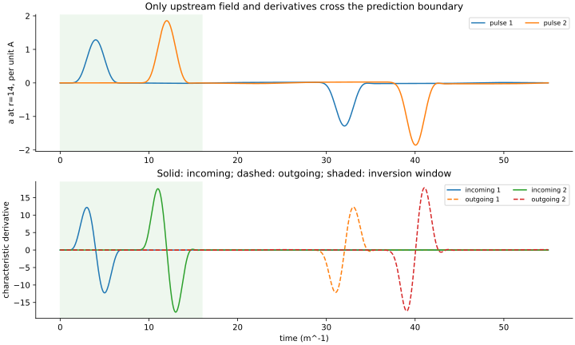
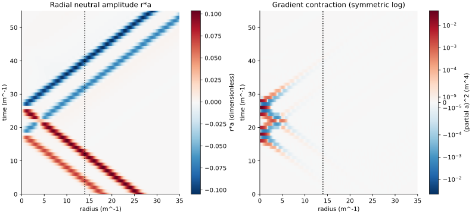
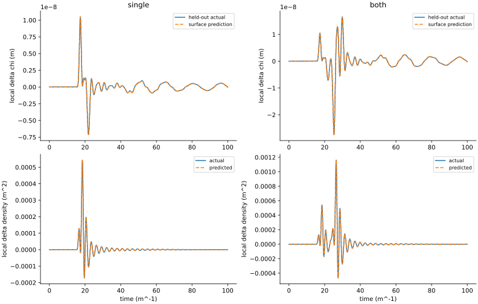
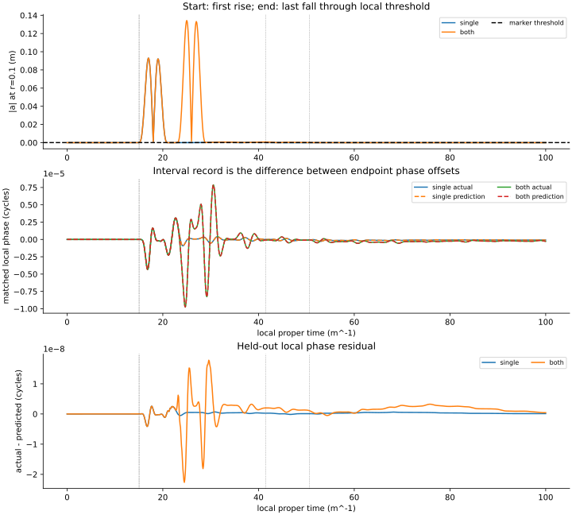
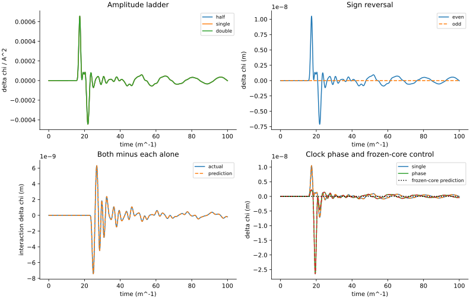
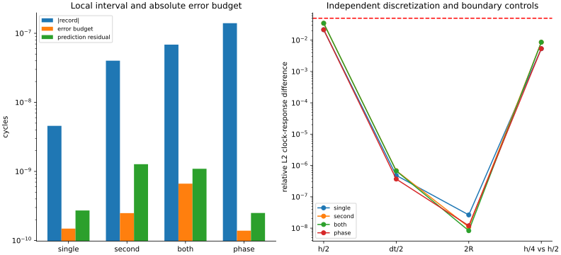

# Signal Space Test 7: surface-only reception Run run-b1677e67610c5870; analysis analysis-0001-036cbbf0; classification fail. Scope: frozen calibrated flat radial receiver; SS OCF 1 action unchanged. All predictions are saved before nonlinear receiver evolution. Quiet marker times are a counterfactual reference. No two-object recoil, observer invariance, angular stability or emergent spacetime is established. Technical execution completed; 10 checks pass and 2 fail. Locked local interval prediction: fail; local marker timing: fail. These checks concern the response approximation and protocol; they do not re-test clock existence. Finest-grid local interval results (cycles; deterministic error budgets): single: actual -4.567289e-09; error budget 1.486e-10; prediction discrepancy 2.720e-10. second: actual 4.008877e-08; error budget 2.490e-10; prediction discrepancy 1.271e-09. both: actual -6.850352e-08; error budget 6.647e-10; prediction discrepancy 1.092e-09. changed phase: actual -1.398646e-07; error budget 1.386e-10; prediction discrepancy 2.504e-10. No acceptance threshold was changed after execution. See the reviewed analysis for the next calculation. amplitude-square: pass conservation: pass frozen-core-control: pass frozen-inputs: pass local-markers: fail marker-prediction: fail numerical-controls: pass prediction-first: pass pulse-overlap: pass record-resolution: pass sign-even: pass surface-prediction: pass surface-characteristics Question: Can the upstream record distinguish incoming drive from returning radiation? Reading: Incoming and outgoing characteristics are built from a, a_t and a_r. Only t=0..16 is inverted. Significance: The predictor no longer consumes the prescribed interior neutral history. Limitation: This is a linear acquisition on a frozen core. Exterior vacuum inversion has mesh and tail errors. packet-overlap Question: Where do the reflected first pulse and incoming second pulse overlap? Reading: Both packets begin outside r=14. Central reflection sends the first outward through the second incoming packet. Significance: This supplies opposite radial directions and allows both-minus-each-alone subtraction. Limitation: The left panel removes the 1/r focusing factor. The right uses symmetric log color; this is not two planar beams. withheld-response Question: Does surface-only prediction match the withheld local clock and density response? Reading: Finest trace errors: single 0.193%; both 0.375%. Significance: This tests the neutral-to-core-to-clock coefficient without fitting the withheld evolution. Limitation: The Taylor and full evolutions share the discrete Hamiltonian. Agreement is bounded by independent numerical controls. local-markers Question: Do locally triggered intervals carry a resolved predicted clock record? Reading: Local marker check: fail; resolution: pass; interval prediction: fail. Significance: The interval uses locally recorded neutral events and local clock quadrature, rather than coordinate arrival alone. Limitation: The quiet history is evaluated at counterfactual event times. Last-fall selection is retrospective in a finite window. controls Question: Do sign, amplitude, pulse-overlap and clock-phase controls support the response mechanism? Reading: Weak amplitude exponent 1.999370; overlap check pass; frozen-core control pass. Significance: Individual pulses isolate the interaction term; clock phase changes test a held-out response configuration. Limitation: Sign symmetry is enforced by the action and is not independent evidence for the response coefficient. error-budget Question: Is the local record larger than independent numerical errors? Reading: Bars compare absolute interval magnitude, direct numerical error and prediction residual. Resolution requires signal greater than five error budgets. Significance: A good-looking trace cannot substitute for a resolved local interval. Limitation: The budget is deterministic, not a statistical confidence interval. The finest profile is interpolated, not independently re-solved.





